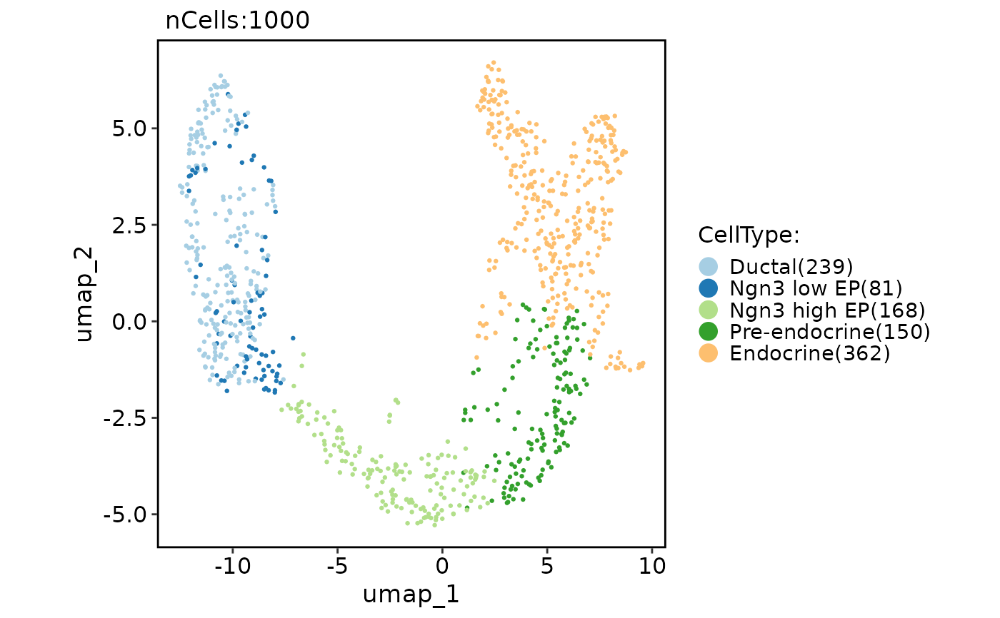

Run TriMap (Large-scale Dimensionality Reduction Using Triplets)
Source:R/Seurat-function.R
RunTriMap.RdRun TriMap (Large-scale Dimensionality Reduction Using Triplets)
Usage
RunTriMap(object, ...)
# S3 method for class 'Seurat'
RunTriMap(
object,
reduction = "pca",
dims = NULL,
features = NULL,
assay = NULL,
slot = "data",
n_components = 2,
n_inliers = 12,
n_outliers = 4,
n_random = 3,
distance_method = "euclidean",
lr = 0.1,
n_iters = 400,
apply_pca = TRUE,
opt_method = "dbd",
reduction.name = "trimap",
reduction.key = "TriMap_",
verbose = TRUE,
seed.use = 11L,
...
)
# Default S3 method
RunTriMap(
object,
assay = NULL,
n_components = 2,
n_inliers = 12,
n_outliers = 4,
n_random = 3,
distance_method = "euclidean",
lr = 0.1,
n_iters = 400,
apply_pca = TRUE,
opt_method = "dbd",
reduction.key = "TriMap_",
verbose = TRUE,
seed.use = 11L,
...
)Arguments
- object
An object. This can be a Seurat object or a matrix-like object.
- ...
Additional arguments to be passed to the trimap.TRIMAP function.
- reduction
A character string specifying the reduction to be used. Default is "pca".
- dims
An integer vector specifying the dimensions to be used. Default is NULL.
- features
A character vector specifying the features to be used. Default is NULL.
- assay
A character string specifying the assay to be used. Default is NULL.
- slot
A character string specifying the slot name to be used. Default is "data".
- n_components
An integer specifying the number of TriMap components. Default is 2.
- n_inliers
An integer specifying the number of nearest neighbors for forming the nearest neighbor triplets. Default is 12.
- n_outliers
An integer specifying the number of outliers for forming the nearest neighbor triplets. Default is 4.
- n_random
An integer specifying the number of random triplets per point. Default is 3.
- distance_method
A character string specifying the distance metric for TriMap. Options are: "euclidean", "manhattan", "angular", "cosine", "hamming". Default is "euclidean".
- lr
A numeric value specifying the learning rate for TriMap. Default is 0.1.
- n_iters
An integer specifying the number of iterations for TriMap. Default is 400.
- apply_pca
A logical value indicating whether to apply PCA before the nearest-neighbor calculation. Default is TRUE.
- opt_method
A character string specifying the optimization method for TriMap. Options are: "dbd", "sd", "momentum". Default is "dbd".
- reduction.name
A character string specifying the name of the reduction to be stored in the Seurat object. Default is "trimap".
- reduction.key
A character string specifying the prefix for the column names of the TriMap embeddings. Default is "TriMap_".
- verbose
A logical value indicating whether to print verbose output. Default is TRUE.
- seed.use
An integer specifying the random seed to be used. Default is 11.
Examples
pancreas_sub <- Seurat::FindVariableFeatures(pancreas_sub)
pancreas_sub <- RunTriMap(object = pancreas_sub, features = Seurat::VariableFeatures(pancreas_sub))
CellDimPlot(pancreas_sub, group.by = "CellType", reduction = "trimap")
#> Warning: No shared levels found between `names(values)` of the manual scale and the data's fill values.
